scale_colour_brewer(..., type = "seq", palette = 1, direction = 1)scale_fill_brewer(..., type = "seq", palette = 1, direction = 1)scale_colour_distiller(..., type = "seq", palette = 1, direction = -1, values = NULL, space = "Lab", na.value = "grey50", guide = "colourbar")scale_fill_distiller(..., type = "seq", palette = 1, direction = -1, values = NULL, space = "Lab", na.value = "grey50", guide = "colourbar")
discrete_scale
to control name, limits, breaks, labels and so forth.typebrewer.pal. If -1, the
order of colors is reversed.colours vector. See rescale for a convience function
to map an arbitrary range to between 0 and 1."colourbar" for continuous
colour bar, or "legend" for discrete colour legend.ColorBrewer provides sequential, diverging and qualitative colour schemes which are particularly suited and tested to display discrete values (levels of a factor) on a map. ggplot2 can use those colours in discrete scales. It also allows to smoothly interpolate 6 colours from any palette to a continuous scale (6 colours per palette gives nice gradients; more results in more saturated colours which do not look as good). However, the original colour schemes (particularly the qualitative ones) were not intended for this and the perceptual result is left to the appreciation of the user. See http://colorbrewer2.org for more information.
The following palettes are available for use with these scales:
dsamp <- diamonds[sample(nrow(diamonds), 1000), ] (d <- ggplot(dsamp, aes(carat, price)) + geom_point(aes(colour = clarity)))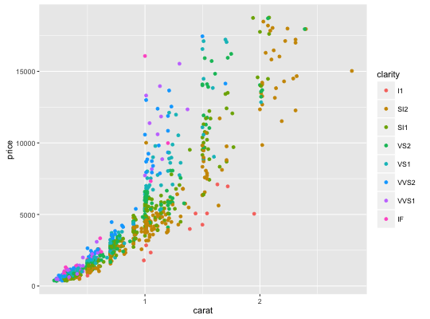
# Change scale label d + scale_colour_brewer()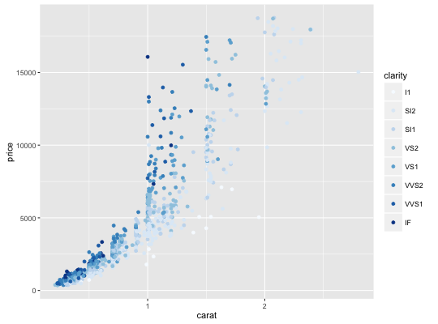
d + scale_colour_brewer("Diamond\nclarity")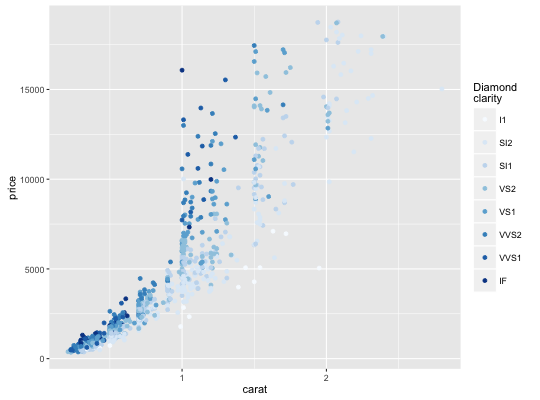
# Select brewer palette to use, see ?scales::brewer_pal for more details d + scale_colour_brewer(palette = "Greens")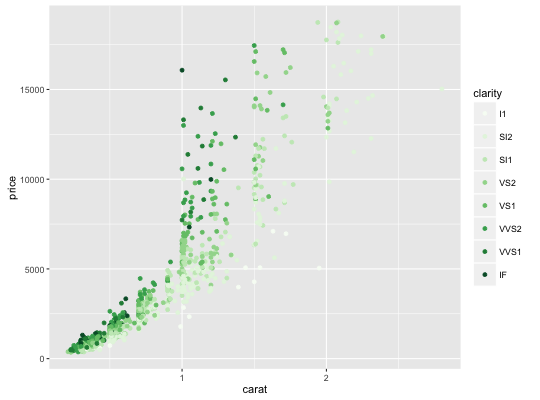
d + scale_colour_brewer(palette = "Set1")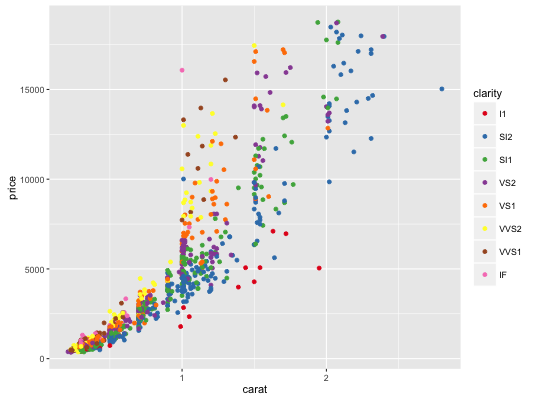
# scale_fill_brewer works just the same as # scale_colour_brewer but for fill colours p <- ggplot(diamonds, aes(x = price, fill = cut)) + geom_histogram(position = "dodge", binwidth = 1000) p + scale_fill_brewer()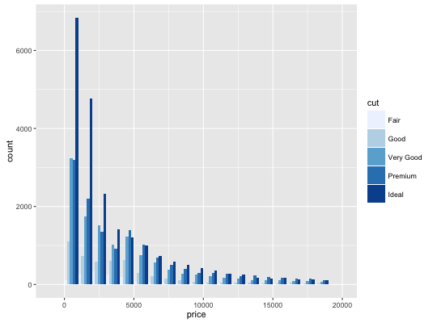
# the order of colour can be reversed p + scale_fill_brewer(direction = -1)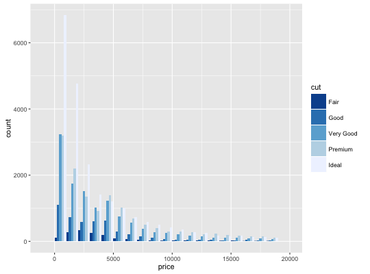
# the brewer scales look better on a darker background p + scale_fill_brewer(direction = -1) + theme_dark()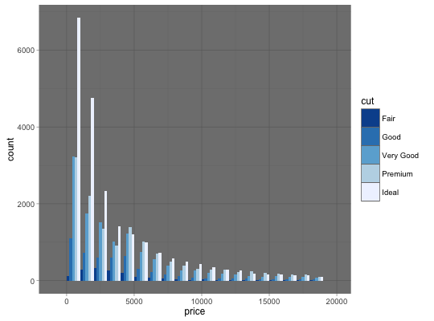
# Use distiller variant with continous data v <- ggplot(faithfuld) + geom_tile(aes(waiting, eruptions, fill = density)) v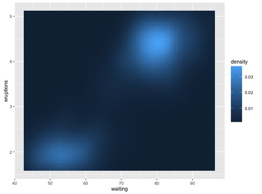
v + scale_fill_distiller()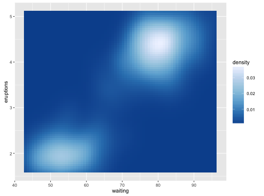
v + scale_fill_distiller(palette = "Spectral")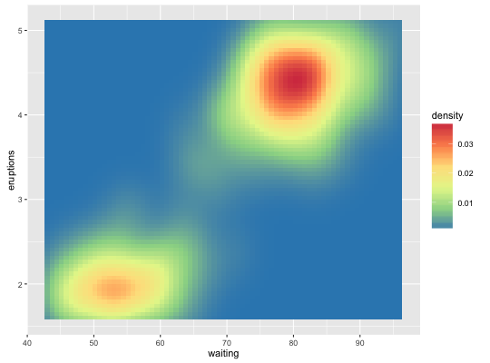